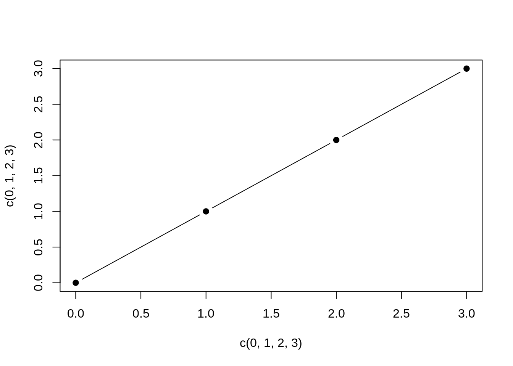

Part 2 Welcome here
par(mar = c(4, 4, 0.1, 0.1)) plot(c(0,1,2,3), c(0,1,2,3), pch = 19, type = “b”)
# get the data from John Hopkins
cases_web <- "https://raw.githubusercontent.com/CSSEGISandData/COVID-19/master/csse_covid_19_data/csse_covid_19_time_series/time_series_covid19_confirmed_global.csv"
death_web <- "https://raw.githubusercontent.com/CSSEGISandData/COVID-19/master/csse_covid_19_data/csse_covid_19_time_series/time_series_covid19_deaths_global.csv"
ita_web <- "https://raw.githubusercontent.com/lucacozzuto/INFN-ISS/main/InfluNet/2021-2022/Sorveglianza%20virologica%20/Dati/Risultati%20delle%20tipizzazioni%3Asottotipizzazioni%20dei%20virus%20influenzali%20circolanti%20in%20Italia.csv"
install.packages(c("dplyr", "reshape", "stringr", "ggplot2"))## Installing packages into '/home/runner/work/_temp/Library'
## (as 'lib' is unspecified)getPartDataFromJH <- function(link, us=FALSE) {
library(dplyr)
library(reshape)
library(stringr)
data_raw<-read.csv(link)
# aggregate data and remove not useful ones
if (us) {
data_raw_sub<-subset(data_raw, select = -c(Country_Region,UID,iso2,iso3,code3,FIPS,Admin2,Lat,Long_,Combined_Key))
if("Population" %in% colnames(data_raw_sub)) {
data_raw_sub$Population<-NULL
}
colnames(data_raw_sub)[1] <- "Country.Region"
data_raw<-data_raw_sub
} else {
data_raw$Province.State<-NULL
data_raw$Lat<-NULL
data_raw$Long<-NULL
}
data_raw.agg<-data_raw %>%
group_by(Country.Region) %>%
summarize_all(sum, na.rm = TRUE)
data_raw.agg.df<-as.data.frame(data_raw.agg)
data_raw.agg.df$country<-data_raw.agg.df$Country.Region
data_raw.agg.df$Country.Region<-NULL
mdata<-melt(data_raw.agg.df, id=c("country"))
mdata$variable<-as.Date(str_replace_all(str_replace(mdata$variable, "X", ""), '\\.', "-"), format="%m-%d-%y")
return(mdata)
}
getSingleCountryData <- function(data_all=NULL, country=NULL, source=NULL ) {
ord_data<-NULL
if (!is.null(data_all)) {
if (country %in% data_all$country) {
single_data<-data_all[grep(country, data_all$country), ]
merge_data<-single_data
death<-as.data.frame(diff(single_data$deaths))
row.names(death)<-tail(row.names(single_data), -1)
merge_data<-merge(tail(single_data, -1), death, by="row.names")
merge_data$Row.names<-NULL
merge_data$deaths<-NULL
names(merge_data)<-c("country", "date","cases", "deaths")
merge_data <- merge_data[order(merge_data$date),]
rownames(merge_data) <- 1:nrow(merge_data)
if (!grepl("PC", source, fixed = TRUE)) {
pos<-as.data.frame(diff(merge_data$cases))
row.names(pos)<-tail(row.names(merge_data), -1)
merge_data2 <- merge(tail(merge_data, -1), pos, by="row.names")
merge_data2$Row.names<-NULL
merge_data2$cases<-NULL
names(merge_data2)<-c("country", "date","deaths", "cases")
merge_data <- merge_data2[, c(1, 2, 4, 3)]
merge_data<-merge_data2
}
ord_data <- merge_data[order(merge_data$date),]
rownames(ord_data) <- 1:nrow(ord_data)
}
}
return (ord_data)
}
getDataFromJH<-function(death_web, cases_web, single=FALSE){
deat_jh<-getPartDataFromJH(death_web, single)
pos_jh<-getPartDataFromJH(cases_web, single)
colnames(deat_jh)<-c("country", "date", "deaths")
colnames(pos_jh)<-c("country", "date", "cases")
jh_data<-pos_jh
jh_data$deaths<-deat_jh$deaths
jh_data$country<-gsub("[()]","",as.character(jh_data$country))
return(jh_data)
}
data_web<-getDataFromJH(death_web, cases_web)##
## Attaching package: 'dplyr'## The following objects are masked from 'package:stats':
##
## filter, lag## The following objects are masked from 'package:base':
##
## intersect, setdiff, setequal, union##
## Attaching package: 'reshape'## The following object is masked from 'package:dplyr':
##
## renamecases_ita<-getSingleCountryData(data_web, "Italy", "JH")
virol<-read.csv(ita_web, sep=";")
virol$group_vir <- ifelse(virol$"Virus" == "Positivi al SARS-CoV-2", 'Covid',
ifelse(virol$"Virus" == "FLU A", 'Flu',
ifelse(virol$"Virus" == "FLU B", 'Flu',
"other")))
virol.2<-virol[-grep("other", virol$group_vir), ]
#virol.agg<-aggregate(virol.2$N., list(virol.2$Settimana,virol.2$group_vir), sum )
virol.agg<-virol.2 %>%
group_by(Settimana, group_vir) %>%
summarise(Positives = sum(N.),
Samples_analized = mean(N..campioni.analizzati))## `summarise()` has grouped output by 'Settimana'. You can override using the
## `.groups` argument.virol.agg.df<-as.data.frame(virol.agg)
raw_date<-as.data.frame(str_split(virol.agg.df$Settimana, " ", simplify = TRUE))
raw_date$year <- ifelse(raw_date$"V5" != "", raw_date$"V3",
ifelse(raw_date$"V4" != "", raw_date$"V4",
raw_date$"V3")
)
raw_date$V3<-NULL
raw_date$V4<-NULL
raw_date$V5<-NULL
good_dates<-data.frame("day" = gsub("-.*","", raw_date$V1), "month" = gsub("-.*","", raw_date$V2), "year" = raw_date$year)
good_dates2<-good_dates %>% mutate("month" = recode(good_dates$"month", 'gennaio' = '1', 'febbraio' = '2', 'marzo' = '3',
'aprile' = '4', 'maggio' = '5', 'giugno' = '6',
'luglio' = '7', 'agosto' = '8', 'settembre' = '9',
'ottobre' = '10', 'novembre' = '11', 'dicembre' = '12'
))
virol.agg.df$date<-as.Date(paste(good_dates2$month, good_dates2$day, good_dates2$year, sep="-"), format="%m-%d-%Y")
merge.df<-merge(virol.agg.df, cases_ita, by.y = "date", by.x = "date")
merge.df$perc <- merge.df$Positives/merge.df$Samples_analized*100
library("ggplot2")
pl1 <- ggplot(merge.df, aes(x=date, y=Samples_analized*100)) +
geom_bar(stat = "unique", fill = NA, colour = "#00abff") +
geom_line(aes(y = Positives*100, group = group_vir, color= group_vir))+
geom_line(aes(y = cases)) +
scale_y_continuous(
"Positives",
sec.axis = sec_axis(~ . * 0.01, name = "Prevalence")
) +
theme_classic()
print(pl1)